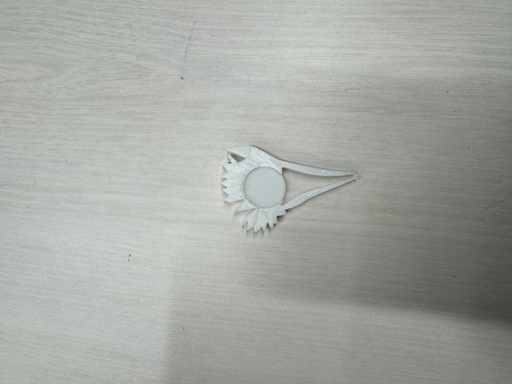
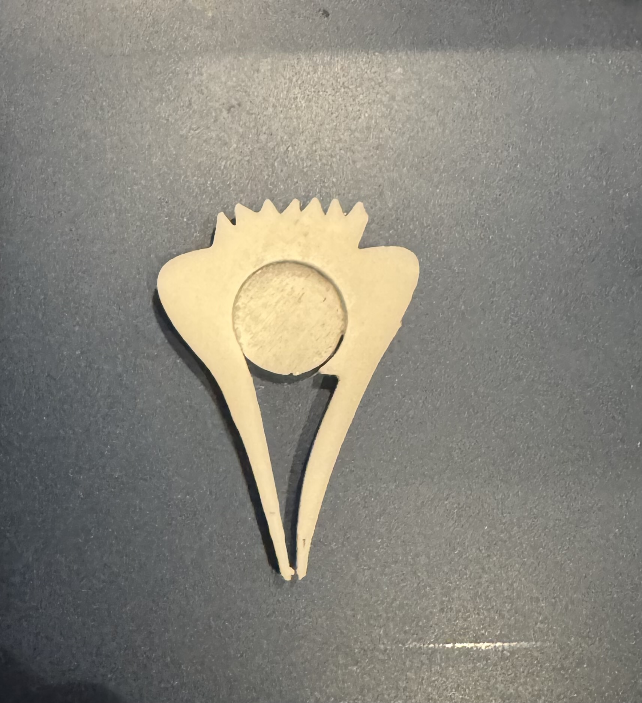

01 作品について
今回はピンセットをもとに形を進化させた作品を制作した。 最初は花のような形を考えたが制作中に形がうまく仕上がらなかったため 面の作り方を見直し、いちごをイメージした形に改善した。
02 最初の失敗

1回目は花びらの部分や網目のような部分を立体的に作ろうとしたが 押し出しの操作がうまくいかず形が崩れてしまった。 きれいな形にするためには面の作り方を工夫する必要があると気づいた。
03 改善したところ
失敗を改善するために全体の面を平らにし、 中央の丸い部分だけを凹ませる方法に変更した。 複雑な部分を無理に立体化するのではなく, 必要な部分だけに変化をつけることで形をきれいに仕上げることができた。
04 完成した作品

これが改善後の作品。 最初の作品よりも面が整い、中央の丸い部分もきれいに仕上がった。 今回の制作を通して、失敗した原因を考え作り方を変えることの大切さを学んだ。
05 制作のきっかけ
普通のピンセットをそのまま作るのではなく、 形を変えることで新しいデザインにできないかと考えたことがきっかけである。 花のような形から始め,試行錯誤を重ねながら 自分なりのデザインに近づけていった。